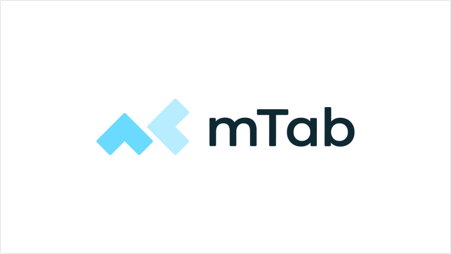
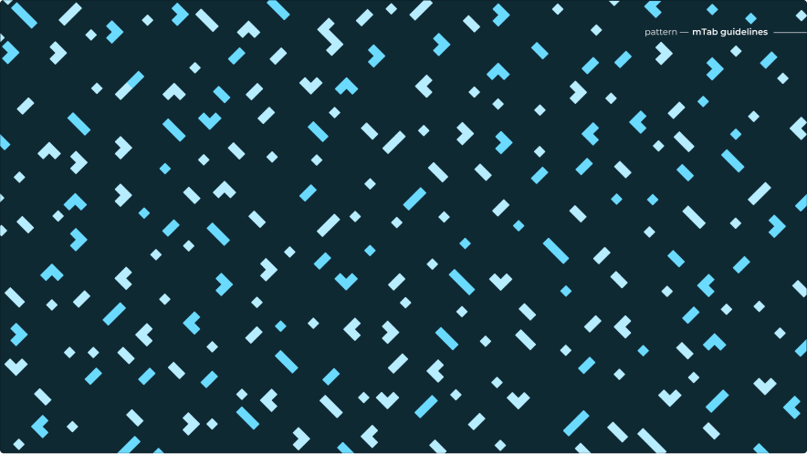
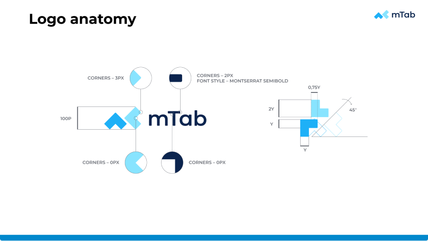
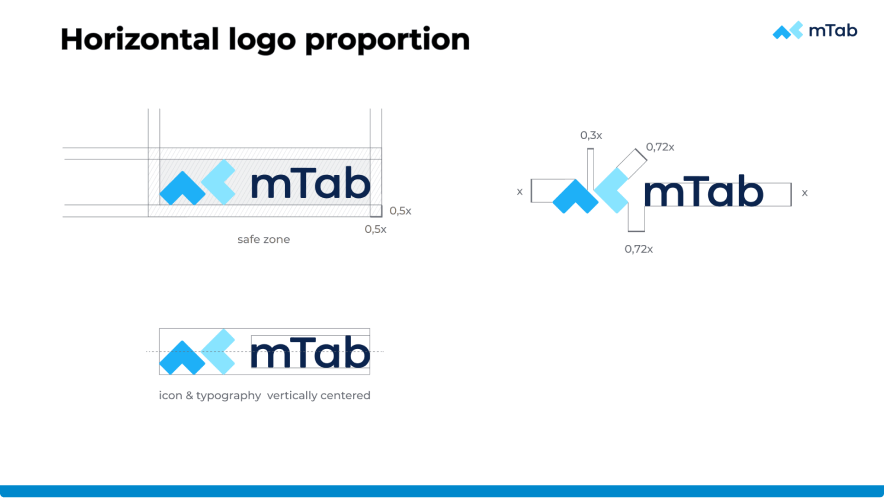
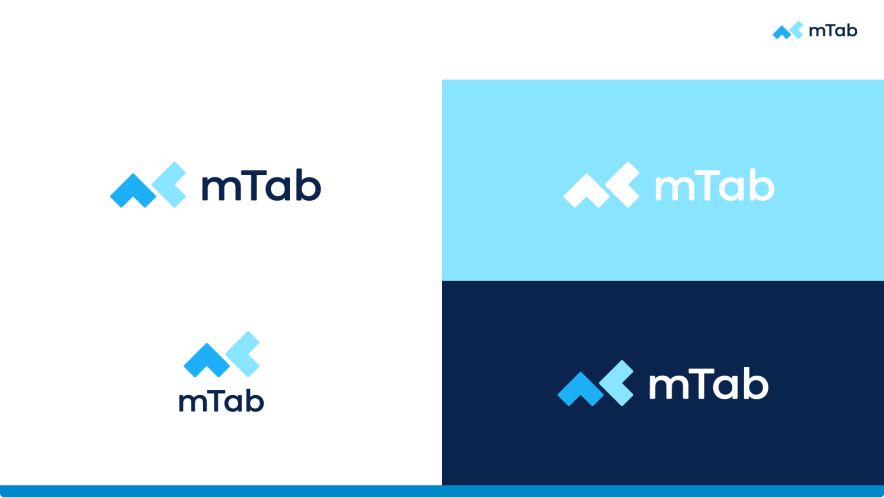
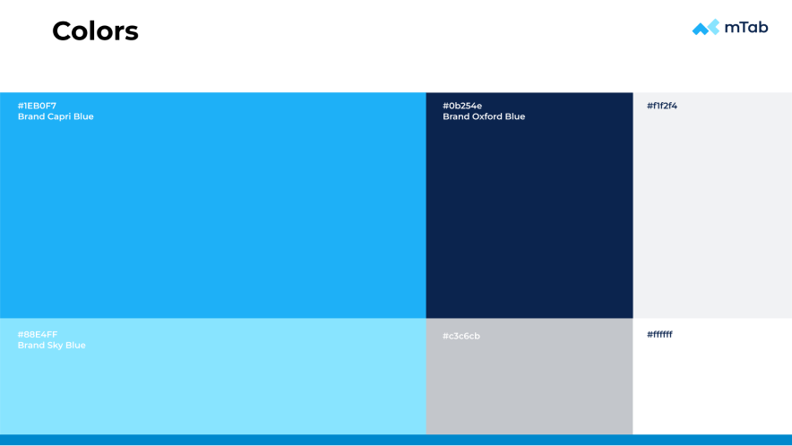
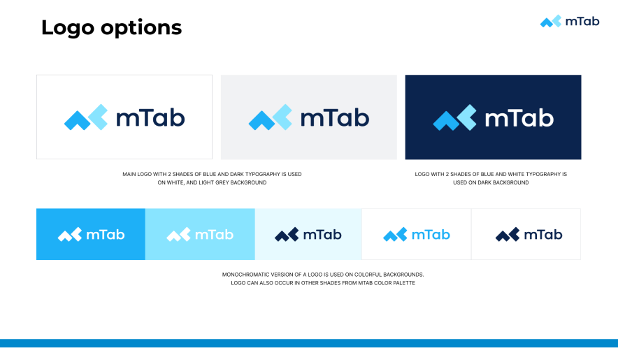
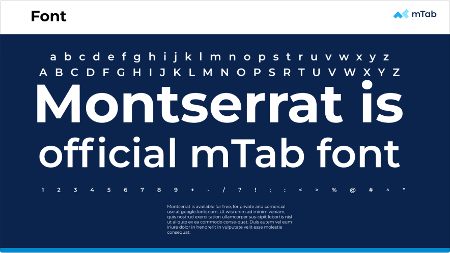

mTab branding
Building a new identity after Slideworx acquisition

Overview
When Slideworx was acquired and restructured as part of mTab, one of the first priorities was creating a new brand identity for the company.
As Head of Design, I led the branding effort — facilitating workshops with stakeholders and the design team to define the visual direction, then overseeing the creation of all brand assets from logo through to final deliverables.
Challenge
The company was entering a new chapter. The existing Slideworx identity no longer reflected what the business had become or where it was heading. We needed branding that felt fresh and professional — credible enough for enterprise clients, minimal enough to be versatile across product UI, marketing, events, and merchandise. It also had to be built quickly, as the rebrand was a foundational step for everything that followed.

Approach
I facilitated workshops with the team and key stakeholders to align on the brand's personality, values, and visual direction. From those sessions, the new identity emerged. The logo was designed to be minimal and highly reusable — with individual elements that could be extracted and used as a repeating pattern across promotional materials and event branding.
The colour palette paired a distinctive cyan blue with a dark teal and an orange accent, using Montserrat as the brand typeface. Beyond the logo, I oversaw the creation of a complete brand book covering logo anatomy, proportions, safe zones, colour variants, and usage rules — along with practical assets like presentation templates, company stationery, application module logos, and favicons.
Outcome
The new mTab branding gave the company a unified, professional identity from day one of its new chapter. The brand system proved flexible — scaling cleanly from product interfaces and the company website to printed materials, event signage, and merchandise.





